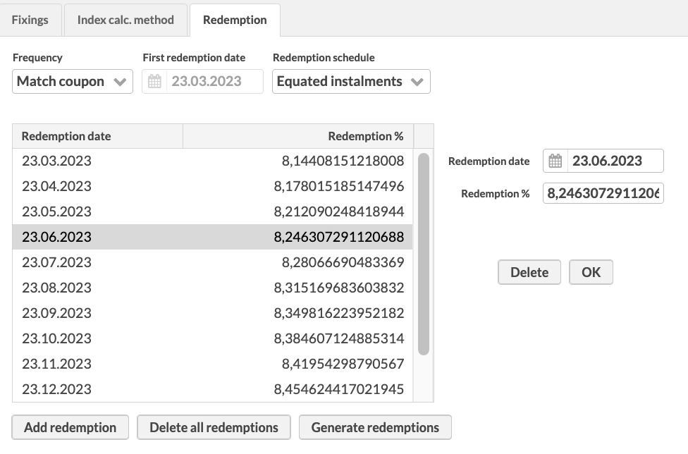
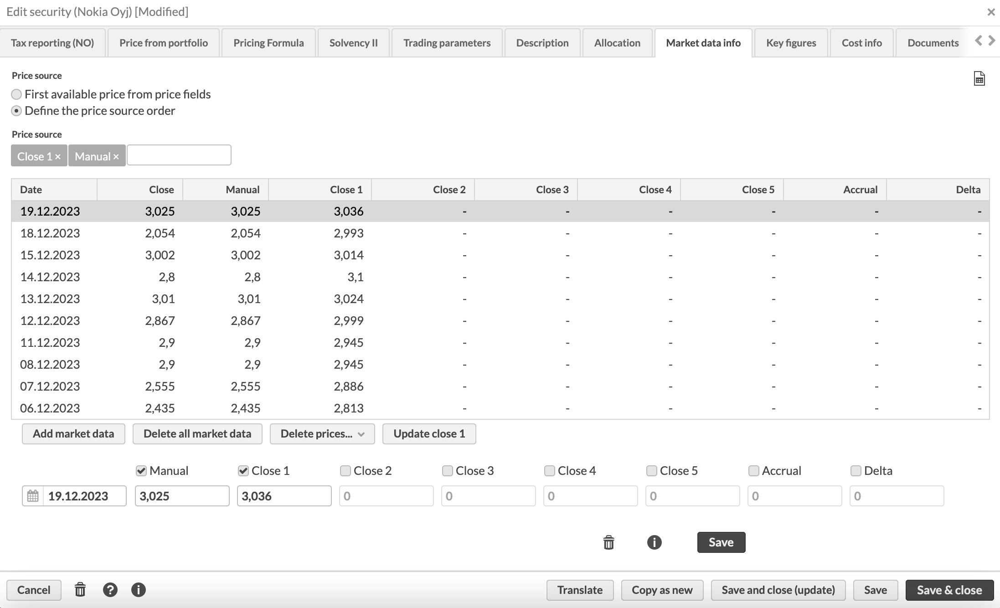
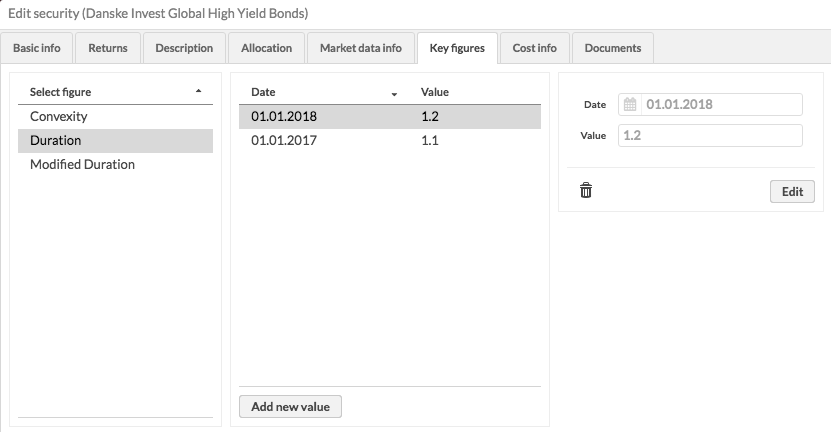

Security window
The Security window allows you to create a new security or to view and edit the information of existing securities. You can create a new security through the menu from New - New security, and you can view the information of existing securities by double-clicking (or by right-clicking the security and choosing Open) a security either from your search result on the Securities view or from the position section on the Overview or Analytics+ view.
The basic information for the security is defined in the Basic info tab, and other tabs are used to define additional information for the security. To switch between the tabs, click on them or use the icon at the bottom of the window.
Basic info tab allows you to define basic properties of a security, such as name and code of the security. A red star indicates that a field is mandatory. Based on the selected security type (and its base type), the available fields vary slightly - some fields are only available on certain types of securities, and some types of securities have a more limited set of fields available.
The following fields are available (fields marked with * are required):
Code*. An individual code defined for the security. The security code separates the security from other securities (the system does not allow more than one security with the same security code). The code is used to identify the security and search for the security from the system. The best practice is to only use numbers and letters (a-z).
ISIN code. The ISIN code of the security which identifies it on the market. The ISIN code, along with the trade code, is used to import transactions for a security, security prices, and in trading flows to link a security to trading connectors. To automatically fetch an update code for importing the security price, you have to specify the ISIN code of your security in the field and then click Update code 1-3 .
Name*. Name of the security.
Status*. Status of the security: "Active", "Passive", or "Closed". The status allows you to categorize securities. The recommended status to use for securities you actively work with is "Active", because securities with this status are shown everywhere in the system and can be worked with in the Transaction and Trade order windows. "Passive" and "Closed" securities are not selectable in these windows, but you can still find all securities in the Securities view.
Type*. Type of the security. The drop-down menu shows security types defined in Preference, Securities, Security types. When changing the type of the security from a base type to another (e.g. changing a bond to be a stock) also clears the information that is not supported by the new base type (in the example above, all bond-specific information would be cleared since not supported by the base type stock). You can see the list of security types used in Standard Solution in FA User guide: Standard security types .
Sub type. Sub type of the security. Options are defined in Preference, Securities, Security types. Only the sub types defined for the selected security type are visible in the drop-down menu.
Base currency. Allows you to select the base currency of your currency cross. Only available for securities with the base type CURRENCY_CROSS. For example, for a currency cross EUR/USD, your base currency would be EUR. For this currency cross, enter the quote currency USD in the Currency field.
Currency*. The currency your security is quoted in. All securities of the basic type currency are listed in the drop-down menu. You can see the list of currencies that are available in Standard Solution in FA User Guide: Currencies (ISO 4217) .
Country. The country of the security. Options are defined in Preference, General, Countries. The country of the security affects taxation (corporate action) transactions.
Marketplace. The market where the security is traded. Options are defined in Preference, Securities, Market place.
Trade code. Identifier of the security in the market where you trade it. The trade code, along with the ISIN code, is used to import transactions for a security, security prices, and in trading flows to link a security to trading connectors.
Update code 1, 2 and 3. Update codes for updating market prices for a security. The different update codes allow market prices to be imported and saved from different sources. The update code of the primary market data source should be defined in the Update code 1 field, and so forth. The imported market prices are saved in the right column in the Market data info tab, based on the update codes defined. If market prices are automatically fetched from an external market prices source, one of the update codes is reserved for the update code used by the external source. Update codes can be specified manually or fetched using the ISIN code in which case the ISIN must be defined.
Settlement place. Settlement place of the security. Options are defined in Preference, Securities, Settlement place.
URL and URL 2. External links. You can define, for example, links to security brochures.
Rating. The rating of the security.
Tenor. The tenor of your interest rate security. Tenors are used when building yield curves in Preference, Yield curves to determine the duration/maturity of the interest rate.
Block size. The trade unit of the security. When equal to or less than one, the block size also affects the decimal places allowed for created cash transactions and trade orders. If no block size is defined, the allowed decimal places come from the security type preferences (see Security types). For example, if the block size is set to 0,01 the amount of the security in a transaction or trade order can be defined with two decimals, or if the block size is set to 1, the amount of the security in a transaction or trade order can be defined only with whole numbers.
You can also define the decimal places to use in transactions created against a certain account. To do this, enter the number of decimals in the Portfolio window, Accounts tab. For details, see Accounts.
Multipliers allow you to handle situations where you want to manipulate the unit prices you enter in the system:
Multiplier (Conversion multiplier). Use multiplier to convert the price into a format that can be used for calculations within the system.
If the security is quoted in a currency, set multiplier to 1.
If the security is quoted in percentages, set multiplier to 100.
Example: If the declared security price is 198.50, but the actual price for calculations should be 1.9850, set multiplier to 100. This means the system divides the price by 100 (198.50 / 100 = 1.9850) for internal calculations.
Multiplier 2 (Display multiplier). Use multiplier 2 to convert the price into the desired display format.
If the price is to be shown as-is, set multiplier 2 to 1.
If the price needs to be transformed back to its original format, set multiplier 2 to 100.
Example: If you set multiplier to 100 and multiplier 2 to 1, the price is displayed as 1.9850. If you set multiplier 2 to 100, the price is displayed as 198.50.
Common use cases for multipliers:
For bonds: Usually, you would set both multipliers to 100. Multiplier converts the price for calculations and multiplier 2 converts it back for display.
For funds: If you receive prices in thousands and want to display them as ones, only set multiplier as 1000. For example: If the price is 1653 and you set multiplier to 1000, the system calculates it as 1.653 (1653 / 1000 = 1.653). You can enter prices manually "as ones" without the effect of the multiplier.
Holiday calendar and Settlement date offset allow you to flexibly control on the security level which days are considered holidays and how many days the security takes to settle. Holiday calendar and settlement date offset are used for accrued interest and coupon calculations for bonds and for calculating the settlement date for trades in the security, i.e. how many business days trades for the security take to settle, and which market’s holiday calendar is used to determine these business days. For example, you can configure specific securities to settle in t+2 in a certain market, while others might settle in t+3 in another market.
Holiday calendar – A holiday calendar that is used for this security to distinguish between business days and holidays in the market the security is traded in - the alternatives allow you to select any holiday calendar configured in Holiday calendar Preferences, such as a weekend calendar (for example Saturday/Sunday weekends or Friday/Saturday weekends) or a market-specific holiday calendar. You can set the default holiday calendar set for all new securities in Preference, Securities, Default holiday calendar.
Enabled settl. date and Settl. date – The settlement date offset, or the security-specific number of days used when determining the settlement date for the security.
Outstanding units. The number of shares outstanding. This value is used to calculate a Holding % available as a column in position listings.
. The number of votes this security has per share. This information is used to track the number of votes in a portfolio or in a contact's holdings and to produce reports to financial authorities in case the percentage of owned votes exceeds or goes below certain limits.
Issuer. The issuer of the security. Issuers are defined in the system as contacts with the type Issuer.
Issuer description. The security issuer description.
Linked portfolio. The portfolio the security is based on. The linked portfolio is chosen from alternatives containing all the portfolios saved in the system. For example, funds and structured products are often based on a portfolio containing multiple different securities.
Linked security. Another security linked to your security. For example, you can link the underlying stock to your equity option, or link the underlying instrument to a derivative.
Manipulation. The manipulation of security prices: Direct (default, the prices are used directly as they are shown), Invert (the prices are shown as inverted) or In its own currency (the prices are shown without a currency conversion). The manipulation describes how security purchase and market unit prices are shown - usually prices are shown as "direct" (i.e. as they are used). The other options allow you for example to show FX rates as "invert" (i.e. inverted in relation to how they are used in calculations) or foreign-currency bonds "in their own currency" (i.e. even though the market value of your position is calculated in portfolio currency, the unit prices are shown without a currency conversion, allowing you to see the bond unit price directly as "percentage of the issue price").
Price from security. The security from which this security gets the market data information. If a security is chosen, the market data information shown for this security is fetched from the chosen security's market data information - changes to the market data are done through the linked security. The market data is fetched from the linked security without the manipulation effect, or always as "Direct".
Class 1, 2, 3, 4 and 5. Classes for the security. Class options are defined in Preference, Securities, Class 1-5. The classification system of securities can be defined as needed, and the classification system may consist of three parts: one class can be chosen for the security from each of the three available classes.
Bookkeeping account. Bookkeeping account number to use in postings. For details, Preference - Bookkeeping.
Tags. Choose tags from the alternatives defined in Preferences - General - Tags. Tags can be defined in three different ways:
Grouped tags (select one): you can select one tag from each tag group, grouped in separate dropdowns. Only one tag in each tag group can be chosen. To group tags in a dropdown, defined them with a hyphen as "group - tag".
Grouped tags (select multiple): you can select multiple tags from each tag group, grouped as separate sets of checkboxes. You can check multiple tags within each tag group. To group tags as a set of checkboxes, defined them with a colon as "group : tag".
Individual tags: search for individual tags by typing the tag in the field and choosing the correct tag from the list below the field - all available tags are shown from the downward arrow on the keyboard. You can select multiple individual tags.
When entering information for a security with certain base types, the Security window contains an additional tab for you to define extra information relevant for these types of securities. Extra info is available for base types BOND, FUTURE, DISCOUNT and OPTION, while Fixings, Index calc. method and Redemption are relevant and available for base type BOND. The information is used for example when calculating accrued interests for a bond or when creating a coupon payment corporate action for a bond.
Extra info
The top section of the Extra info tab allows you to define information about maturity and payments for your bond, option, or future security.
Issue date. The date when the bond is issued and the interest begins to accrue.
Issue price. The issuer's original selling price of the bond.
Maturity date. The date on which the principal of a bond is repaid to the investor along with the final interest payment.
Maturity price. The amount of final bond repayment. In addition to the bond principal, maturity price can include other premiums, such as the last coupon.
Face value. The principal value of one bond unit.
Call date. The bond's next call date.
Fixings
Fixings tab allows you to define the fixing information for your security, especially relevant for calculating accrued interests and coupon payments on bonds. You can define fixings either as fixed (for example fixed rate bonds), or as floating (for example floating rate notes).
Fixing information is used to calculate the accrued interest for securities of base type BOND. Accrued interest on the position level is calculated based on the selected report date (unless you have overridden this on the portfolio level to calculate accrued interest on "settlement date", when the accrued is calculate based on a date calculated from the selected report date adjusted with bond's settlement date offset), holiday calendar and business day convention). If the bond is bought, the paid accrued interest of the purchase is used as the accrued interest of the position until the settlement date of the purchase. Bought accrued interest in the Transaction window is calculated based on the settlement date of the transaction.
Fixed fixings
The fields at the top of the tab allow you to define schedule, percentage and other information for fixings. For more detailed descriptions of the fields, see Bond-related calculations.
Calendar. The day count convention for the bond. The day count is used to convert dates to a numeric representation for financial maths, and is the base for accrued interest and coupon calculations for bond.
Frequency. The frequency (how often fixings are paid): Daily, Weekly, Every two weeks, Every four weeks, Every 13 weeks, Every 26 weeks, Every 52 weeks, Monthly, Every two months, Every three months, Every four months, Every six months, Annually or Once (zero-coupon bond).
For fixed rate bonds, define the fixed fixing information:
First fixing date. The first fixing date indicates the date of the first fixing after the security is issued. After the selected first fixing date, the following fixing dates are determined based on the calendar and frequency selected.
Coupon. The annual fixing as a percentage %.
For bonds, define additional parameters for calculating accrued interests and coupons (follow the links for more detailed description of the alternatives):
Stub convention. The rule used to place the stub period in the bond's schedule, if one should occur. When determining a schedule (i.e. how often a coupon is paid), each date between the start date and end date based on the day count convention is allocated into a period. Most dates are allocated into a regular period, based on the selected frequency. Any dates left over are allocated to a stub, either at the start or end.
Business day convention. The rule used to to adjust a date (such as coupon date of a bond) if it falls on a non-business day.
Roll convention. The rule used to override the default schedule of a bond if needed. For example, roll convention “end-of-month” allows you to configure that the first date of a monthly schedule, such as June 30th, should roll to the last day of each month instead of the 30th of each month.
Ex-coupon period. The number of days before the coupon payment date during which the bond is traded ex-coupon, or without coupon (if the bond is bought during the ex-coupon period, the next coupon is paid to the previous holder of the bond, not the buyer).
Yield convention. The convention to use for calculating yield to maturity, durations and convexity from the alternatives UK BUMP/DMO method, US street, German bonds (default) and Japan simple yield.
Base instrument and spread
You can define information relevant for floating rate notes linked to another instrument:
Base instrument . The base instrument from the securities defined in the system. The base instrument can be used as information for example for calculating fixings for floating rate notes.
Spread . The spread added to the values from the base instrument as a percentage %.
Offset days. The number of days before the observation a new reset rate is set.
Note
If you want to generate fixings for your floating rate notes based on the base instrument and spread, use the "Populate fixings for floating rate notes" process (see Add fixings for a floating rate note).
Generate fixings
You can check if the bond information you entered results in appropriate fixings. The Generate fixings button under the Fixings for floating rate note table produces a list of expected coupon dates based on the fixing information you defined (excluding base instrument and spread). The table shows:
Fixing date . The date from which the defined fixing rate is valid from.
Fixing. The value of the fixing as a percentage.
If you already have some entries in the table, they aren't replaced, but instead, only the dates that come after the latest date on the list are added.
Add fixings for a floating rate note
For floating rate bonds, you can define the individual fixings manually. Click the Add fixing button and define the fixing information in the fields on the right. The manually defined fixings are listed in the table, ordered with the date defined, newest first. Note that manually added fixings always override the fixed fixing defined.
Thus, a manually added fixing of 1.1.2014 and 5,00 % indicates that the fixing rate for the bond is 5,00 % starting from 1.1.2014. Once this coupon is paid, a new fixing date and rate should be added to start from the coupon payment.
Delete fixings
The Delete all fixings button below the table allows you to delete all fixings you have added or generated to your bond security.
Index calc. method
For index linked bonds, the price, accrued interests and coupons are adjusted with an index coefficient to compensate for changes in inflation. For index linked bonds, you can define the required information under the Index calc. method tab.
When valuating a position of a security that has a linked index, a coefficient (calculated from the market prices of the linked index and index base value with the defined index convention) is taken into account (multiplied) when calculating the accrued interests and market value of the position. The index coefficient is calculated as Coefficient (date) = Linked index (date) / Index base value based on the information defined within the Index calc. method tab.
Fields to define the linked index:
Calculation impact. Indicates if the defined linked index and index base value affect the Market value and accrued interest or Accrued interest. The first selection utilizes the linked index and index base value to calculate both the market value and accrued interests of an index linked bond according to the selected index convention, while the second selection applies the linked index and index base value only to the calculation of accrued interest according to the selected index convention, assuming that the market unit prices for the index linked bond are already index corrected.
Linked index. The linked index from the securities defined in the system. The market prices from the selected linked index are used to calculate the coefficient used to value an index linked bond according to the selected index convention.
Index base value . The value used to calculate the coefficient used to value an index linked bond according to the selected index convention.
Fields to define the index convention:
Index convention . A pre-defined index convention from the conventions used in different countries or regions. Selecting an appropriate convention from the alternatives pre-fills the following fields for calculation mode and lags according to the selected convention, and valuates your index linked bonds with the linked index and index base value according to the convention of the region. If you cannot find an appropriate pre-defined convention, choose Other, and define the calculation parameters yourself.
Calculation mode . The calculation mode determines how the coefficient used to value an index linked bond is calculated based on the defined linked index and index base value:
With Linear interpolation, the coefficient used in valuating index linked bonds is calculated with the interpolated value of the linked index for months defined in lag 1 and lag 2 prior to the settlement date of the bond. For example, Swedish idex linked bonds use an interpolated index value for 2 and 3 months prior to the bond's settlement date.
With Direct calculation, the coefficient used in valuating index linked bonds is calculated with an index value taken for months back as defined in lag 1. For example, Finnish index linked bonds use 3-month lag with no interpolation.
Lag 1 in months. A numeric value between -1 and 12, representing the lag 1 in months. Used both for direct calculation as months back, and in linear interpolation as the end point for the interpolation. If your bond is tied to the NEY (lagged CPI), select -1 to use the upcoming month's CPI value in the calculation.
Lag 2 in months . A numeric value between 0 and 12, representing the lag 2 in months. Used only in linear interpolation as the starting point for the interpolation.
Pre-defined index conventions and the pre-filled values:
Index convention | Calculation mode | Lag 1 in months | Lag 2 in months |
|---|---|---|---|
Canada, US, France, Germany, Italy, Denmark, Sweden, UK after July 2005 | Linear interpolation | 2 | 3 |
South Africa | Linear interpolation | 3 | 4 |
UK prior to July 2005 | Direct | 3 | - |
Finland | Direct | 8 | - |
Redemption
Redemption tab allows you to define the redemption information for your security, relevant for example for partial expirations. This information is not directly used by the system, but allows you to store relevant information on redemptions.
|  |
Fields to define the redemption information:
Frequency . Redemption payment frequency:
Annually, Semi-annually, Quarterly, Monthly, Weekly or Daily.
Match coupon – use the coupon frequency defined in the Fixings tab.
First redemption date . The date of the first redemption after the security is issued. After the selected first redemption date, the following redemptions can be determined based on the frequency selected.
Repayment plan. Redemption structure:
No repayments – No principal payments over the life of the bond. Repay the whole principal on the maturity date.
Equated installments – Payments in equal amounts that include principal and interest. The principal amount gradually increases with time.
Straight line – Payments that include principal and interest. The principal part is the same in each payment. Payment amount decreases over time.
Other – Define redemption amounts yourself.
Description tab allows you to write an optional and more detailed description of the security.
Allocation tab allows you to define the allocation of the security. The allocations related to an asset group defined for the security are listed on the left-hand side of the window: a security can have an allocation for each asset group defined in Asset classes and types Preferences. You can find the list of allocations available in Standard Solution in FA User guide: Asset classes and asset types.
For example, you can define geographical and industry-based allocations separately.
You can view and modify the allocation information by choosing the corresponding allocation group from the listing on the left. You can add a new allocation, and define the allocation information on the right-hand side of the window.
When defining an allocation, first choose the asset group you want to use (e.g. are you defining geographical or industry-based allocation). Second, select the date from which the allocation is valid from for the security and add it to your allocation definition. The start date should usually be set before this security appears in your portfolios (i.e. when your portfolios start getting in transactions for this security) - if the allocation starts later than the first transactions for this security come in, this security is allocated as Other until the date it is valid from. If you want to update your allocation's content, add a new date to it - the new content will be valid from the new date onward, while the prior index content will be used until the new date.
Below each date you can see the content of the allocation. You can add a new asset type under the selected date: you need to define the asset type and the share of this asset type from the whole allocation. For each new position under the selected date, choose the asset type from the drop-down menu. In the field next to it, define the share of the selected asset type of the whole allocation. If the allocation consists of a single asset type, define the share as 100 % - if the share of the selected asset type is less than 100, you have to create new positions and define their shares so that the sum of the shares of different asset types under one date equals 100.
Market data info tab allows you to view and modify the market data information of a security.
|  |
Market data entries are listed based on the date, newest first. The Close column shows you the close price of the day, or the market price that is used for the security for that date. This close price is by default used when calculating the market value of positions in this security.
You can set how the Close price is determined by choosing one of the Price source options:
- First available price from price fields
Close price is the first non-empty value when going through the columns from left to right. In other words, the value of the Close column is determined by the Manual column, then by Close 1 and so forth. The market price inserted in the Manual column always overrides the prices in the other columns for one date.
- Define the price source order
Define a different order of columns for this security. For example "Close 4, Close 1, Close 2" means that the close price is picked up from the Close 4 field. If Close 4 is empty, then from Close 1, then Close 2.
You can also define the price source on the portfolio level (see the Portfolio window topic).
You can modify an individual market data entry by choosing it from the listing. You can add a market data entry for the security with the Add market data button. Define the new market price entry in the available fields (fields marked with * are required):
- Date*
Choose the date of the market data entry.
- Manual
Manually define the market price for the date.
- Close 1, 2, 3, 4 or 5
Define the market price you received from your market data source into the corresponding close field. Recommendation is to use a Close field that corresponds with the Update code field you have defined in security's Basic info: the market data entry received from the price source defined in the Update code 1 field is entered in the Close 1 field and so forth. To define the price, first enable the field(s) you are using with the checkbox above the field.
- Accrual
Define the value of accrual included in the market price. Accrual is tracked along with a market price, and the value in the accrual field indicates how much accrued income in security currency was included in that day’s market price - the accrual defined on the security is used to calculate your position's accrual as Amount*Accrual.
Accrual is recommended to be recorded along with a market price (i.e. a value in manual / one of the close fields), but you can track accrual also on its own. (Available from FA 3.7 onward) Your position's market value excludes your position's accrual, while your position's market unit price includes accrual, and market value (d) includes your position's accrual (available from FA 3.8 onward).
- Delta
Define the value for delta. Delta defined on the security is used to calculate your position's exposure - if your security has delta, then the exposure is multiplied by delta. If delta is not found on the latest market data observation relative to the valuation date, delta is assumed to be 1. If security has price on the valuation date of 2020-01-30, but no delta is recorded on that date, delta is assumed to be 1. Even if delta is found on 2020-01-29, that delta is not used, since it was not found on the same date as the latest price. Thus, delta should always be recorded along with a market price, and value of delta is picked along with the market price used. (Available from FA 3.7 onward)
When the market data information is filled in, save the market data entry with the OK button below the fields. Versions button allows you to view the versions of each market data entry.
You can also manage market data through the following buttons:
- The Excel icon at the top-right
Export the market prices.
- Delete all market data
Delete all market data from the security - this feature removes all market data entries you have saved to the security.
- Delete prices
Clear only the entires in a specific column, leaving other entires untouched.
- Update close
Fetch the latest market prices if they are missing, i.e. prices since the latest existing entry within the close field the system can find. If you want to fetch the entire history from the market data connector, first delete prices from the corresponding column and then update close prices.
- Revaluate close 5
Calculate missing discount factors on your future cashflow securities - this button is only available if you have a permission to revaluate securities and the security's base type is DISCOUNT. For more information, see the Automatic and manual valuation in the Valuation of forward cashflows section.
For bonds with appropriate bond information in the Extra information tab, FA also supports calculating the bond price based on importing YTM instead of bond price to the system. For more information, see the File formats for importing securities and security prices section. Price can be imported with % (e.g. 3.45%), when the system calculates the price according to YTM automatically.
Market data info for a fund security
For a fund security, market data info is filled in automatically when you accept NAV in the FA Fund management app.
- Manual
NAV of the share class unit in the share class currency.
- Close 1
NAV of the share class unit in the fund's base currency.
- Close 2
NAV of the share class in fund's base currency.
- Close 3
Not used.
- Close 4
NAV of the share class in the fund’s base currency depending on swing pricing settings for the fund:
Unswung NAV, if you choose swung NAV as official NAV.
Swung NAV, if you choose unswung NAV as official NAV.
- Close 5
Unit accrued income distribution.
- Accrual
Unit accrued income distribution.
The Key figures tab allows you to manually record values for different security indicators. For example, you can store different ratings (for example, CO2 rating, credit rating) or other values for your securities. For bond and fund securities, you can manually record values that override values automatically calculated by the system. The following key figures are available:
Key figure | Available for |
|---|---|
Duration | BOND, FUND |
Modified duration | BOND, FUND |
Convexity | BOND, FUND |
YTM | BOND, FUND |
Collateral ratio | STOCK, BOND, OPTION, FUTURE, CASH, FUND, DISCOUNT, CURRENCY, DEPOSIT, INDEX, CURRENCY_CROSS, CONTRACT |
Key figures are available as columns in the Securities view and show the latest key figure value stored in the Security window. Key figures are also used in Analytics+ and override values calculated by the system if they are within the selected period. Your manually defined key figure values are aggregated on the group level if all securities within the group have a defined value. To learn how to add Analytics+ columns based on key figures, see Add a column based on a key figure in FA Developer.
|  |
Manage key figures
The key figures available for the security are listed on the left side of the tab. You can select a key figure and see the values recorded so far on the right side. You can start storing values for another figure by clicking Add new key figure or add new values for an existing key figure by selecting it and clicking Add new value.
For each observation stored for a key figure, you need to define a date and a value. To change the current value of a key figure, add a new one.
For example, if you store the duration values 1,1 on 1.1.2018 and 1,2 on 1.1.2019, the system automatically calculates duration before 1.1.2018 and uses 1,1 during 1.1.2018-31.12.2018 and 1,2 from 1.1.2019 onward.
Costs
Costs tab allows you to define fixed costs and fees related to your security. Percentage (%) sign after the cost indicates that the cost in question is defined as a percentage of the price of the security - other costs and fees are announced in terms of currency.
- Payment fee
Payment fee in the security currency.
- Payment fee percentage (%)
Payment fee as a percentage of the security price.
- Payment fee min
Minimum payment fee.
- Payment fee max
Maximum payment fee.
- Management fee
Management fee in the security currency.
- Management fee percentage (%)
Management fee as a percentage of the security price.
- Management fee min
Minimum management fee.
- Management fee max
Maximum management fee.
- Start-up fee
Start-up fee in the security currency.
- Kickback percentage (%)
Kickback as a percentage.
- Minimum trade amount
Minimum trade amount for the security, i.e. what is the minimum trade amount of a trade for this security. The minimum trade amount defined is taken into account in rebalancing: trade orders smaller than the defined minimum are filtered out and not created.
Ex-ante / Ex-post costs
Ex-ante / Ex-post costs tab allows you to define security-related costs (fields marked with * are required):
- Date*
The date from which your cost percentages are valid. You can update your security costs by adding a new date and defining new cost percentages - the new values will be considered starting from the date you define.
- Market value to use
Security market value to use for calculating the ex-post costs:
Ingoing market values (default) – Use the beginning of the day value, that is previous day's end-of-day market value.
Outgoing market values - Use the same-day market value.
- Ex-ante costs
Define ex-ante cost percentages for your security. You can break down the security's ex-ante costs into One-off charges, On-going charges, Charges related to transactions, Charges related to ancillary services or Incidental charges, or you can use up to five additional Other cost categories to categorize your costs even more extensively.
- Ex-post costs
Define ex-post cost percentages for your security.
Latest cost percentages are available as columns on the security listing, allowing you to easily search for securities with certain costs.
Full ex-post disclosure of costs, calculated based on the defined cost categories, is available then on Analytics+ or on a specific Ex-post costs report.
In the Security groups tab, you can manage the static security groups the security is part of and view the dynamic security groups it is in.
Available static security groups - list of static security groups you can add the security to. The groups are listed by name.
Chosen static security groups - list of static security groups the security is currently part of. The groups are listed by name.
Current dynamic security groups - list of dynamic groups the security is currently part of. The groups are listed with the group's name.
To include the security in a static security group, select a group from the left column and transfer it to the right using the arrows. To remove the security from a static security group, transfer the group from right to left.
You cannot add or remove dynamic security groups in the Security window. You can modify dynamic group criteria in the Groups view to make changes to the dynamic groups the security is part of. For more information, see Groups view.
Document tab allows you to manage documents related to your securities. For more information, see the Document management section.
Saving a security saves the security into the system, and after you save the security, you can for example create transactions or trade orders on it. When editing the information of an existing security, usually saving is enough - the updated information is picked up by the system automatically.
However, there are certain scenarios when you need to click Save & close (update) in order for the system to recalculate all affected portfolio reports for your changes to take effect.
At the bottom of the Security window, you can:
- Save and close
Saves the security / the changes made to the security information and closes the window.
- Save
Saves the changes made to the security information, and takes you back to the Basic info tab.
- Save and close (update)
Saves the security, closes the window and recalculates all affected portfolios' report data. This might affect multiple portfolios and the update might be triggered for a long period of time, depending on how many portfolios contain the security! Update is only necessary if you modify the below information, otherwise saving without an update is enough and avoids unnecessary report recalculations.
Currency
Multipliers
Maturity date
Coupon/fixing information
Ex-post costs (only prior to FA 3.9 - from FA 3.9 onward, changing security's ex-post costs automatically triggers the necessary report recalculations. Report data is automatically recalculated when from the oldest modified ex-post date onward, and no longer requires an update.)
Code (only prior to FA 3.10 - from FA 3.10 onward, changing security’s code no longer requires “Save and close (update)”. Report data no longer depends on security codes, and thus changing the code no longer requires an update - your positions are up-to-date even when security codes are changed.)
- Copy as new
Copies all of the existing security's information as a base for you to create a new security with a new code. This function copies all other security information except for the Security code and content of the Market data info tab.
- Translate
Allows you to add translations for the security name and description. This allows you to have different, translated names for your securities, that can for example be used in reporting in different languages.
Saving a security is audited when saving the security might result in report recalculations - user audit tracks user clicks Save and close (update) button or saving and closing the Security window after modifying security's market data. Every time a user clicks Save and close (update) in the Security window, user audit contains a message ”User [username] clicked Save and close (update) in Security window for security [code]”, and every time a user updates security's market data through the Market data info tab and closes the window (either through first clicking Save and then closing the window or directly clicking roleSave&close), user audit contains a message ”User [username] closed the Security window for security [code]”. Also, every time a report recalculation is started, the system audit logs which portfolios' reports are recalculated and from which date onward. (Available from FA 3.9 onward)